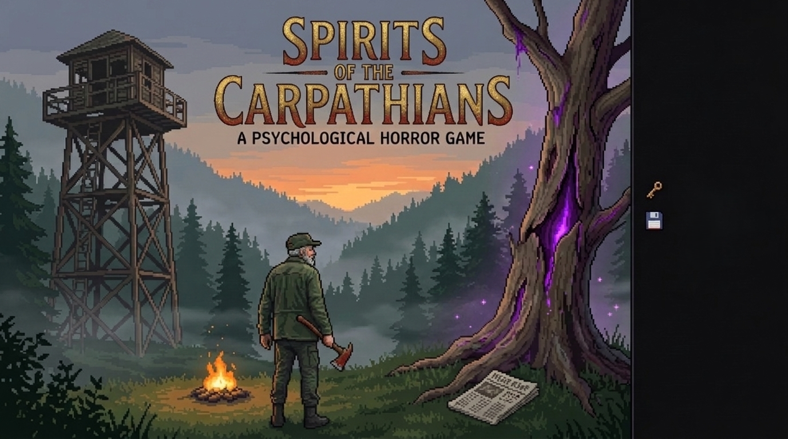

Фізика, Рух та Анімації
Оновлення Beta: покращено фізику та рух персонажа, додано генерацію хмар.
Головний герой — колишній лісничий, який повертається до рідних лісів Карпат заради ностальгії. Знайомі стежки та залишені колись позначки для туристів викликають теплі спогади.
Вирушивши до своєї старої наглядової вишки, герой бере до рук сокиру і раптом ловить моторошний флешбек із невідомим голосом. Проігнорувавши попередження, він зрубує хворе дерево... і пробуджує щось паранормальне.
Звідкись прилітає газета з майбутнього. Раптовий удар. Темрява. Так закінчується перша глава.

Повністю кастомна система переміщення гравця з плавними стрибками та новими анімаціями.
Безшовне перемикання між рівнями з унікальною музикою та багатошаровим дизайном.
Надійна система SaveService для збереження всіх досягнень гравця.
Оновлення Beta: покращено фізику та рух персонажа, додано генерацію хмар.
Реалізовано перемикання між локаціями та збереження прогресу гравця.
Додано меню, налаштування та hover-звуки для кнопок.